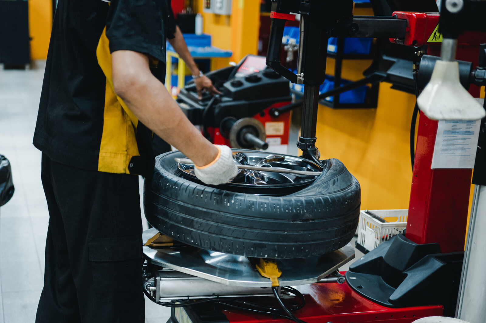

Home / Blog / Ontario Air and Noise Approvals
IN-HOUSE RETREADINGBuffers, skivers, dust collectors and curing equipment can all need provincial air and noise approval in Ontario. Here is how section 9, ECAs and the EASR apply to a fleet standing up its own retread line, and what to sort out before the equipment arrives.
Published November 26, 2026 · Good Hope Retreaders

When a fleet plans its own retread line, the budget conversation usually covers equipment, floor space, staff and power. One line item gets missed: provincial environmental approval for the air and noise the line will produce. In Ontario, a buffer, a skiving station, the dust collector behind them and the curing equipment can all fall under the province's air and noise approval rules. Sorting this out before the equipment arrives is far easier than sorting it out after.
This guide explains the framework in plain terms, using the Ontario government's own published guidance and the approvals other Ontario retreaders have received. It is not legal advice. The rules are detailed, they are being revised, and the right path for your site depends on facts only you and a qualified consultant can confirm.
Ontario's air approval program is built on section 9 of the Environmental Protection Act. The Ministry of the Environment, Conservation and Parks describes it as requiring companies to obtain an approval before the construction, alteration, extension or replacement of any equipment or structure that may emit a contaminant into the natural environment. Noise is assessed under the same section, and the ministry publishes guidance (NPC-233) on the information needed to assess stationary sources of sound.
There are two ways that obligation is normally met:
A separate regulation, O. Reg. 524/98, exempts some equipment from section 9 altogether. Whether anything on your line is exempt is a question to check against the current text of that regulation. We have not found a retreading-specific exemption, so don't assume one applies.
Not every facility can use the EASR. The ministry's air emissions user guide includes a list of ineligible facilities by primary NAICS industry code. A facility whose primary code begins with a listed code is ineligible, so a listed three- or four-digit code also excludes every more specific code beneath it. NAICS 3262, rubber product manufacturing, is on that list.
That matters because retreading sits inside rubber product manufacturing. Canada's industry statistics describe the tire manufacturing group (32621) as including establishments retreading or rebuilding tires, and the U.S. NAICS gives tire retreading its own code, 326212. In practice, a standalone retread plant in Ontario is classified within 3262, so it is ineligible for the air EASR and goes the ECA route.
A fleet adding a retread line to its own maintenance facility is a less clear-cut case. The facility's primary NAICS code may be a transportation code, not a rubber manufacturing one. That could change which route is open to you, and it is exactly the kind of question to put to an environmental consultant or the ministry early. Don't decide it yourself from a code lookup.
ECAs are posted publicly on the Environmental Registry of Ontario, and approvals issued to retreaders show which equipment the ministry treats as emission sources:
The pattern is consistent. Your buffer and skiver are dust sources, your dust collector is the control equipment, and your curing and heating equipment are sources too. Fans and collectors also make noise, which is why these approvals are issued for air and noise. A small line needs the same kind of approval as a big one. It just has fewer sources to model.
O. Reg. 1/17 currently requires facilities with prescribed activities that are approved under an ECA to move to the EASR by January 31, 2027. On August 6, 2026, the ministry posted a proposal (ERO 026-0775) to remove that fixed deadline. Under the proposal, facilities could keep operating under their existing ECA and would register on the EASR only when a change would otherwise need an ECA amendment. Law firms covering the proposal describe it as regulatory relief for facilities with existing ECAs.
For a fleet building a new line, the transition rule matters less than the basic question of which route applies. But it is a reminder that this area is changing. Check the current regulation and the Registry before you rely on any guide, including this one.
This is our suggested order of work, based on the framework above. It's a planning aid, not an official procedure:
Bringing retreading in-house gives a fleet control over casings, quality and turnaround, instead of relying on an outside retreader's schedule and pricing. That control comes with the responsibilities of an operator, and environmental approval is one of them. It isn't a reason not to do it. Ontario retreaders hold these approvals routinely. It's a reason to plan for it, so the approval timeline and consulting cost sit in your payback calculation from day one instead of turning up as a surprise.
Good Hope is a manufacturer-direct supplier of retreading machinery, including buffing machines, skiving stations, dust collectors and electric curing chambers, plus the consumables to keep a line running. We don't run retread shops for customers. We equip and supply fleets that run their own, with local Ontario service, and we can give your consultant the equipment details the approval work needs.
Tell us your casing volume and your space. We'll quote buffing, dust collection and curing equipment as one transparent, all-in Canadian price, with local Ontario service included.
Get an equipment quote →Send us your requirements and we'll get back to you within 24 hours with pricing and lead times — no obligation.